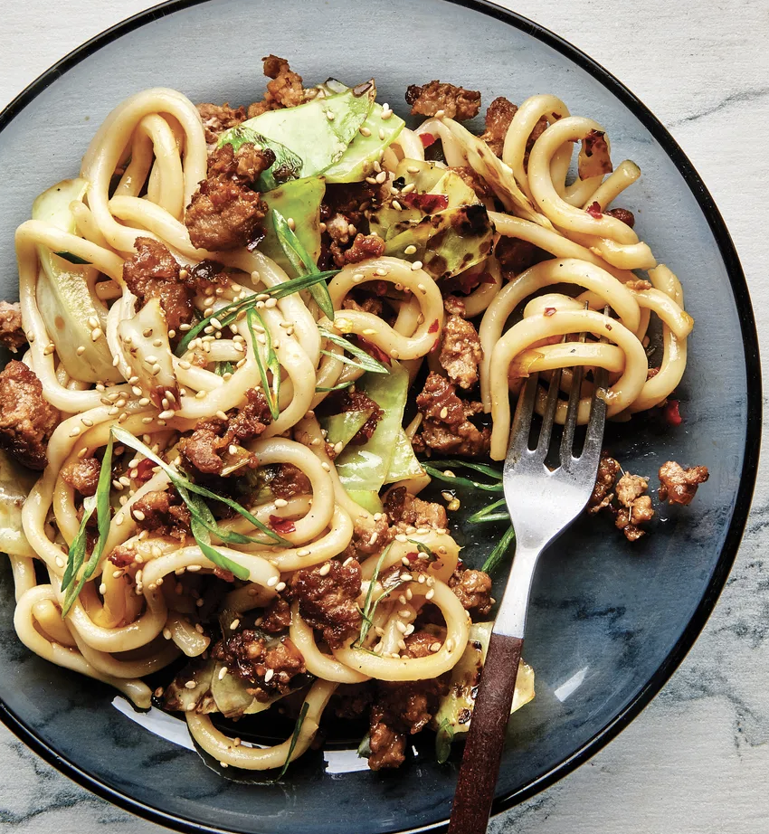

Stir Fried Udon

Description
This udon holds a warm place in my heart. It was one of the first things I made after buying a wok.
The dish comes together with just a few ingredients that are all available at local grovery stores
and mostly pantry spices/sauces. You can use any type of udon (frozen or dried), any type of meat (I like pork, but turkey worked too).
Be sure to also double the cabbage, you wont regret it. You will become obessed with
charred cabbage before you're even finished cooking this. Believe me.
Ingredients
- 2 Tbsp. vegetable oil, divided
- 4 cups very coarsely chopped green cabbage (about 1/4 medium head)
- 2 (7-oz.) packages instant udon noodles, flavor packets discarded
- 2 tsp. toasted sesame oil
- 8 oz. ground pork
- 5 scallions, white and pale green parts coarsely chopped, dark green parts thinly sliced
- 2 tsp. finely grated peeled ginger
- 1 tsp. crushed red pepper flakes
- 1/3cup mirin (sweet Japanese rice wine)
- 1/3 cup soy sauce
- 1 Tbsp. toasted sesame seeds, plus more for serving
Steps
- Heat 1 Tbsp. vegetable oil in a large skillet over medium-high. Cook cabbage, tossing often, until edges are browned, about 4 minutes. Reduce heat to low and continue to cook, tossing often, until thickest parts of cabbage are tender, about 4 minutes longer. Remove from heat; set aside.
- Place noodles in a large heatproof bowl (or pot if you don’t have one) and cover with 6 cups boiling water. Let sit 1 minute, stirring to break up noodles, then drain. Transfer noodles back to bowl and toss with sesame oil. Add reserved cabbage and wipe out skillet.
- Heat remaining 1 Tbsp. vegetable oil in skillet over medium-high and add pork, breaking up and spreading across surface of pan with a spatula or tongs. Cook pork, undisturbed, until underside is browned, about 3 minutes. Break up meat into smaller pieces and continue to cook, tossing, just until meat is cooked through and no longer pink, about 1 minute. Add chopped scallions (the white and pale green parts), ginger, and red pepper flakes and cook, tossing often, until scallions are softened and inside of skillet starts to brown, about 1 minute. Add noodle mixture, mirin, and soy sauce and cook, tossing constantly and scraping up browned bits, until noodles are coated in sauce, about 45 seconds. Remove from heat and mix in sliced scallions (the dark green parts) and 1 Tbsp. sesame seeds.
- Divide noodles among bowls and top with more sesame seeds.